This page shows damage to the dresser I ordered. Click any of the images to see them in full size.
These are images of a crack in the front and underside of the long short dresser (piece LE). The crack is not only visible on the front (if/when properly assembled, but it appears to be deep, making the piece structually unsound. The crack extends from the front all the way to the back.
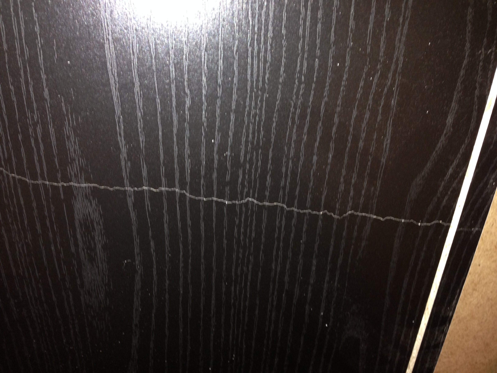

 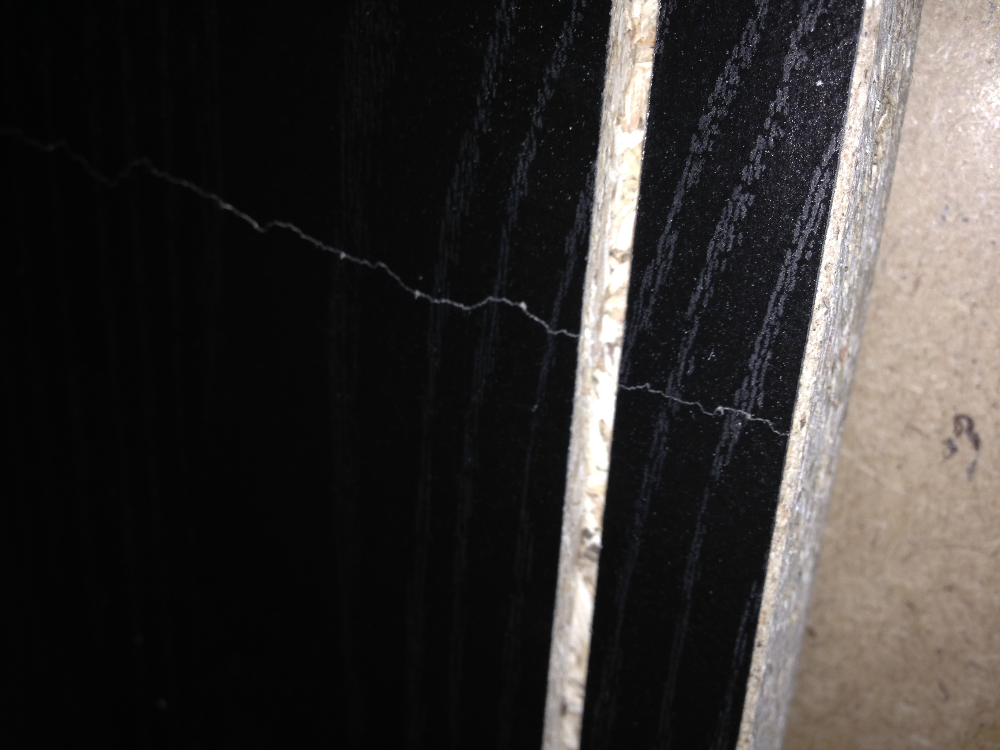
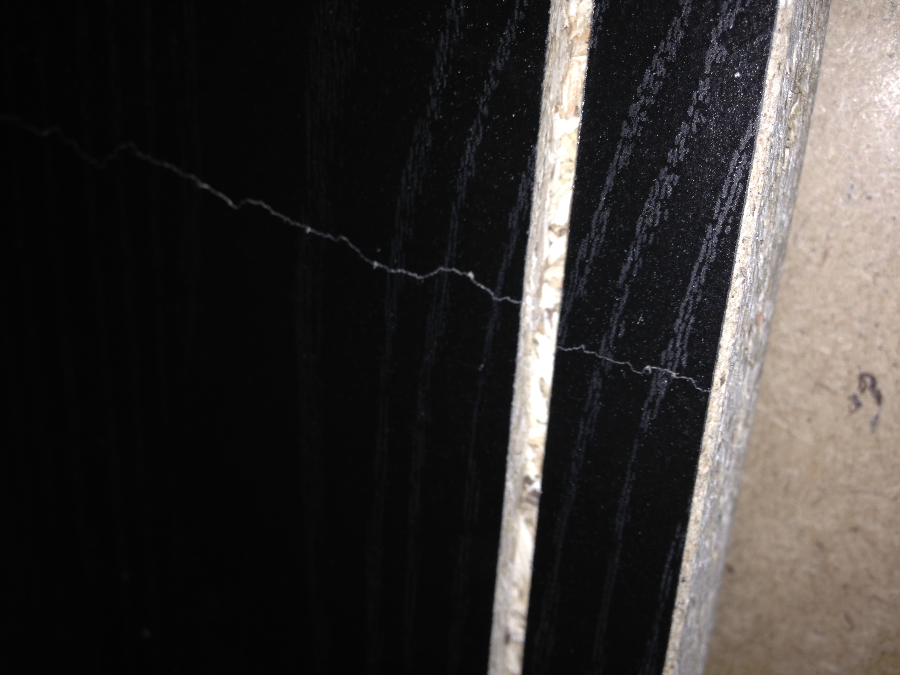
The next images show damage to the front side of the tall dresser (piece FK). Unfortunately, the damage is on the front and not the back, and so it is very visible.
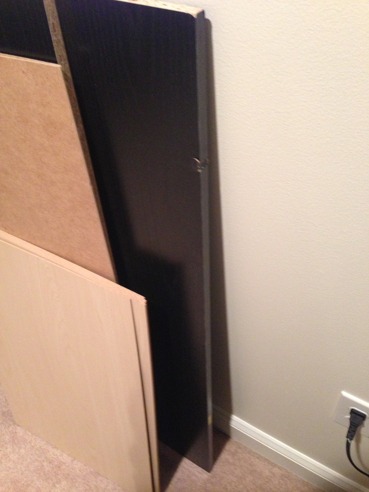 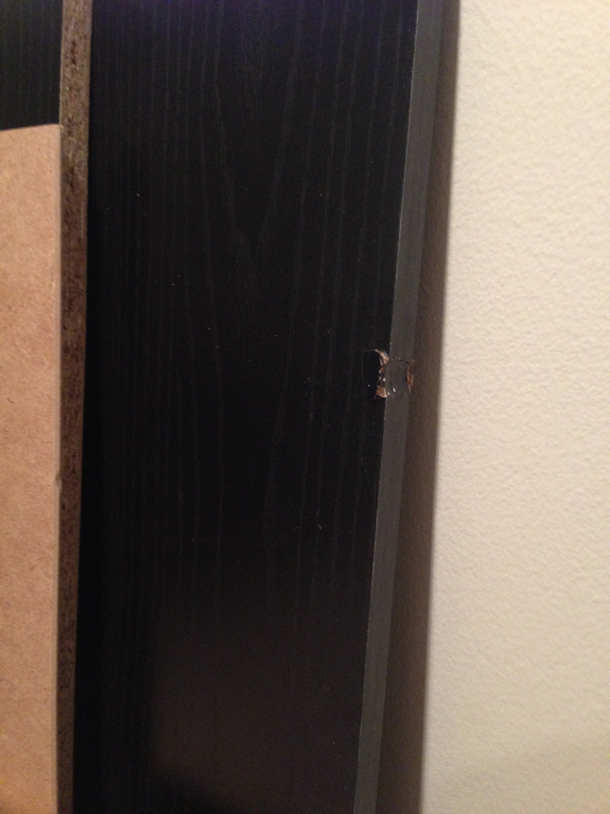 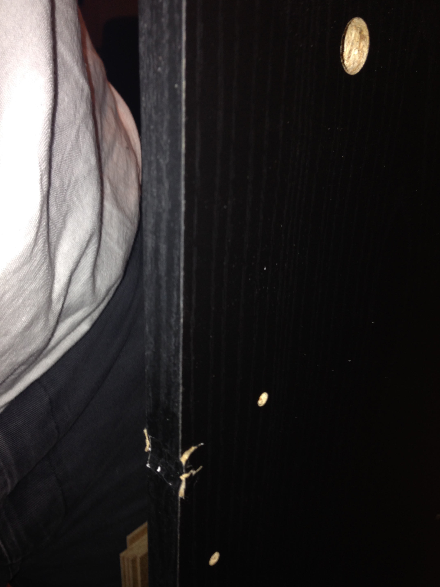 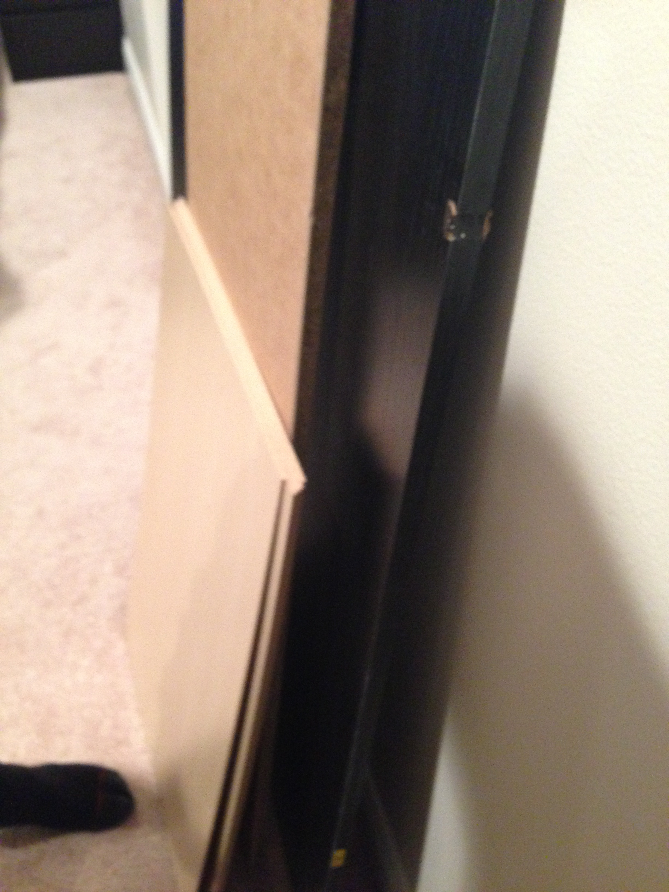The next images show damage to the other front side of the tall dresser (piece HK). This damage isn't as bad, but is still on the front, and unfortunately still visible. (The last images just shows that it is piece HK.)
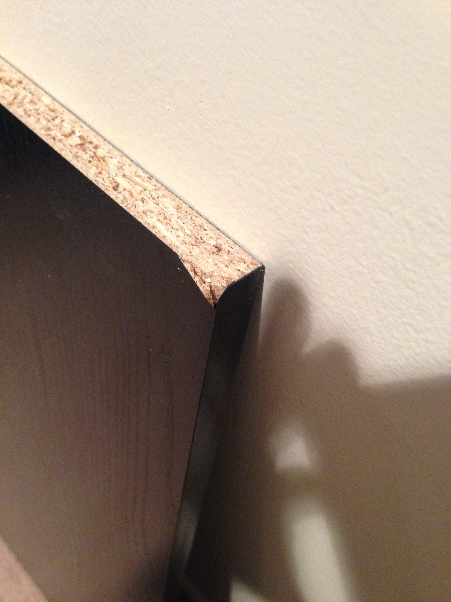 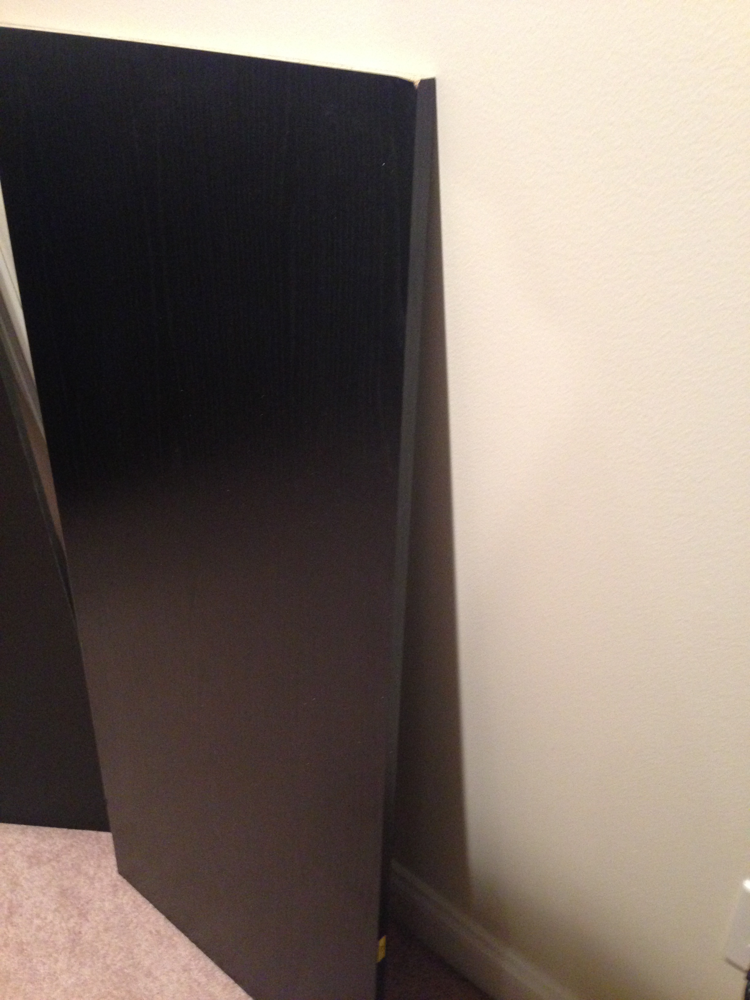 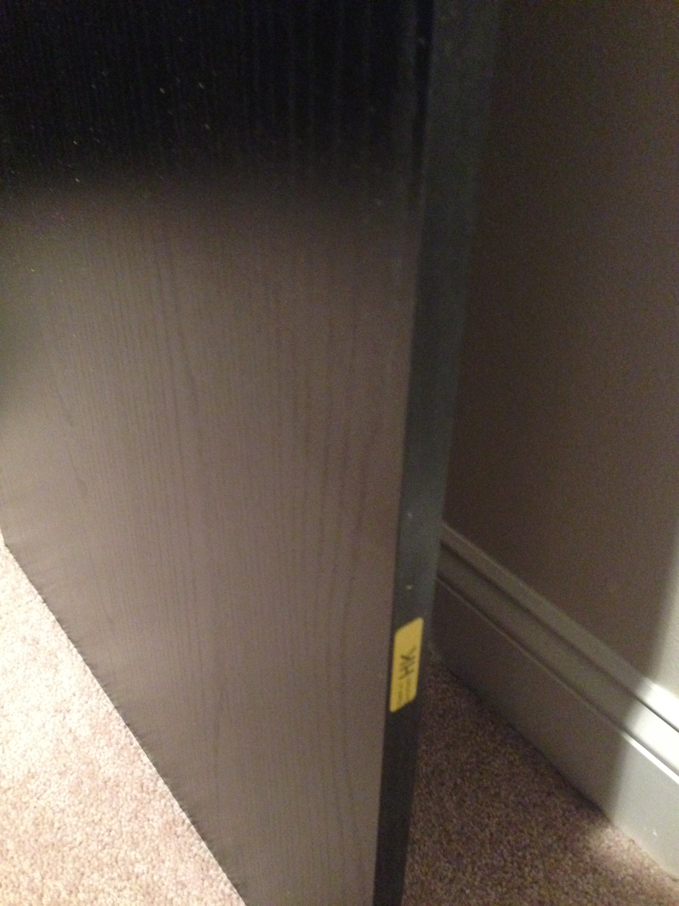The next set of images show some damage to the back side of piece HK. This sort of damage might be tolerable, but, HK already has damage to the front side. I figured I would show this damage anyway.
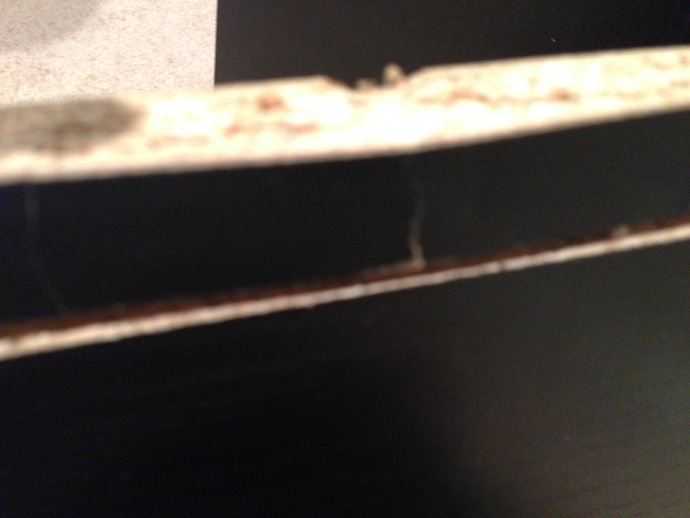 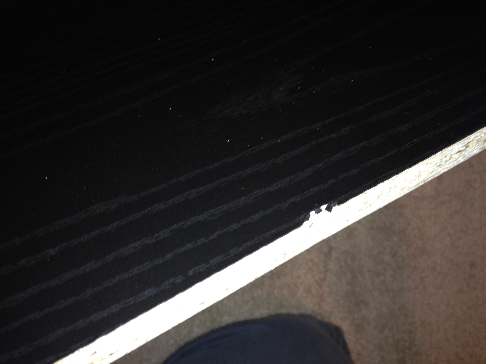 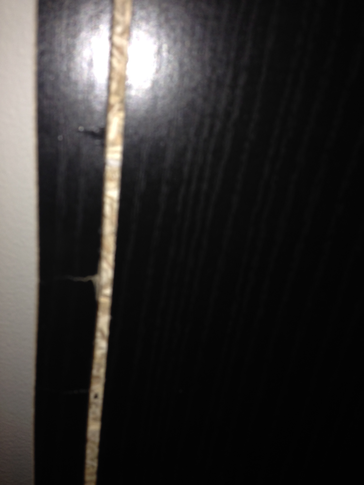